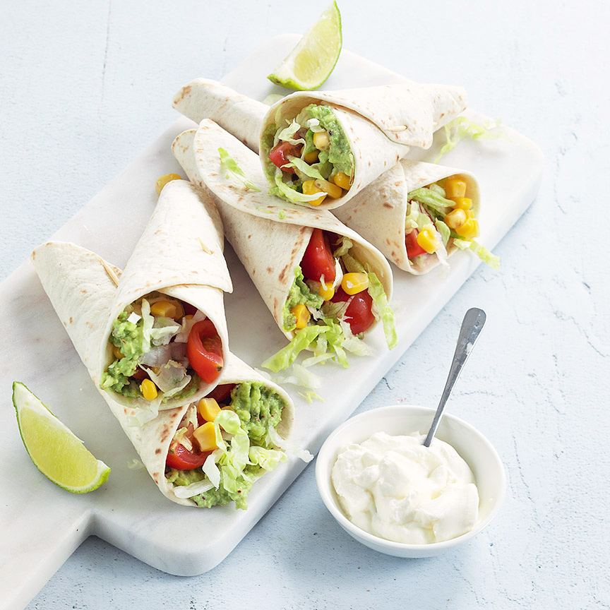

Mini wrap hoorntjes met salade
Deze mini wrap hoorntjes zijn een lekker en gezond hapje met romige avocado en een Mexicaanse salade, lekker als tussendoortje of borrelhapje
Ingrediënten
- 8 mini wraps
- 2 avocado’s
- 1 limoen
- Snuf chilipeper
- peper en zout
- Handje ijsbergsla
- 1 klein blikje mais
- 8 cherry tomaatjes
- 125 ml zure room
- prikkers
Bereidingswijze
- Snijd de avocado's doormidden en verwijder de pit en schil.
- Prak het vruchtvlees van de avocado fijn met het sap van de limoen, snuf chilipeper en peper en zout.
- Besmeer de mini wraps met het avocado mengsel, en houd 1 cm van de rand vrij.
- Rol de wraps op in de vorm van een hoorntje en steek ze vast met een prikkertje.
- Vul de hoorntjes met wat sla, mais, stukjes cherrytomaat en maak ze af met een lepeltje zure room.
